Les personnages du tome 1
Axel ?
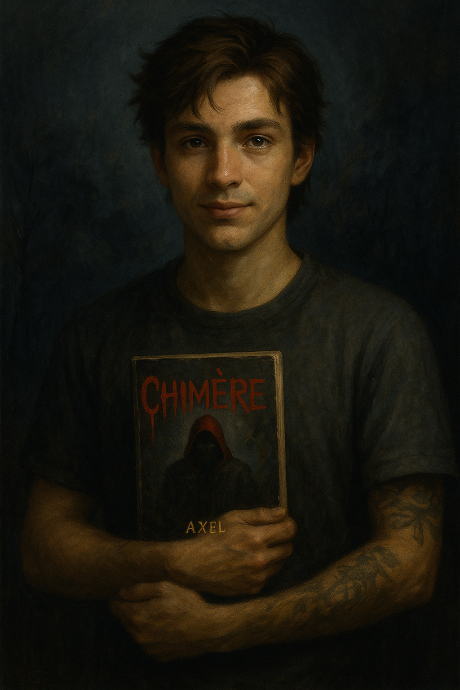Axel est un jeune orphelin ayant été adopté par une gentille famille, sans souvenirs de ses parents biologiques. Le jour de ses 18 ans, il recevra un mysterieux colis anonyme comprenant une lettre et un livre. Le contenu de la lettre sera dévoilé dans le prologue, tandis que sur le livre, il était écrit : Chimère . Nous comprenons alors que c'est Axel qui sera le narrateur principal de cette fiction qui pourrait ne pas être si fictive que ça...
Fallen
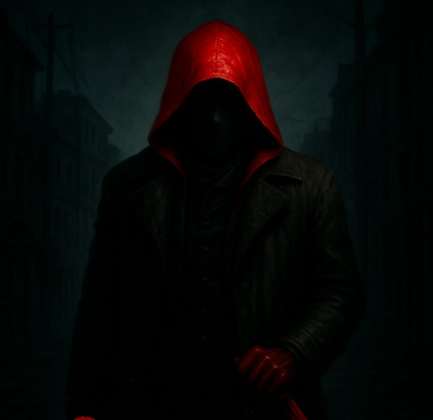Nul ne connait mieux la douleur et le sacrifice que Fallen. Cet être qui a perdu plus que ce qu'il possédait, et pour qui la vengeance n'est pas salvatrice. elle est simplement obligatoire. Après avoir lancé un jeu de traque avec les autorités, Fallen apporte le malheur à toutes les âmes qui ne sont pas aussi blanches que les apprances pourraient le laisser penser.
-A-
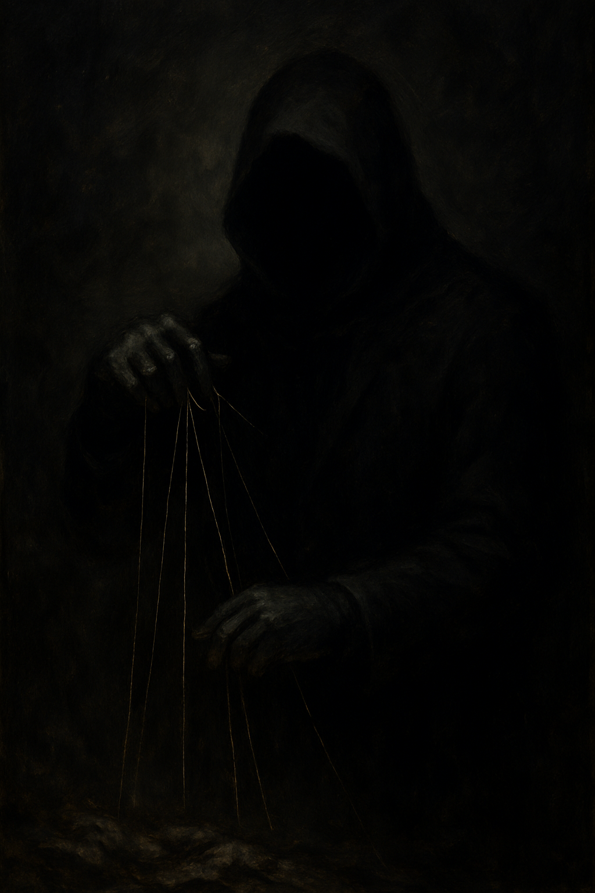Personnage énigmatique dont l'identité demeure cachée. -A- semble au courant de beaucoups de choses et utilise son savoir pour tirer les ficelles de ce qui semble être un véritable échiquier géant.
Alix DRAUGH
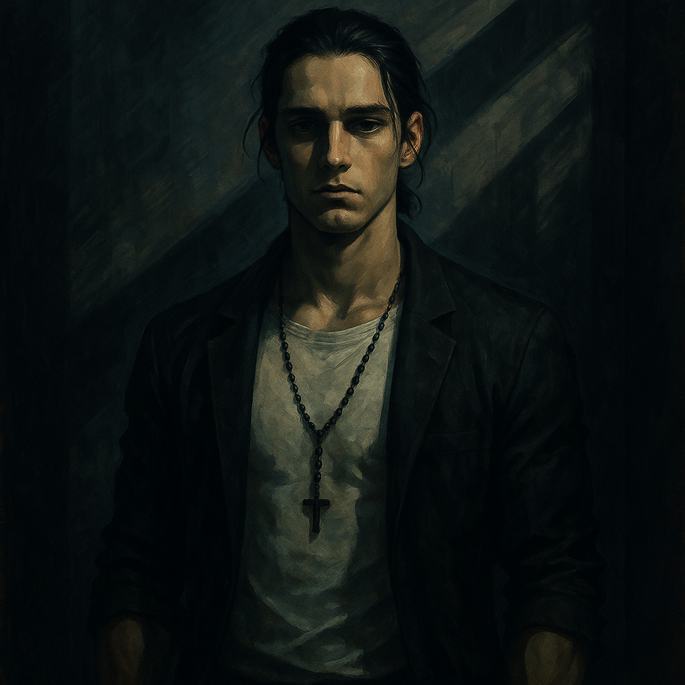Après le décès de ses parents, Alix est devenu une âme antipathique. Sa lucidité et son intelligence ont fait de lui un personnage aussi destable qu'attachant. Rejeté par la pluspart, Alix verra toutefois sa vie drastiquement changé lorsqu'il fera la rencontre de Kylia, et avec qui il verra peut-être la flamme de son coeur se rallumer.
Laurenn Draugh
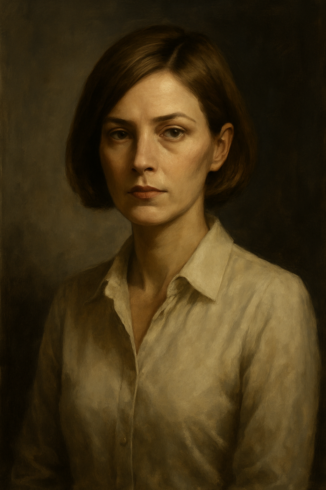Décédée avant l'histoire, Laurenn était la mère d'Alix. Informations limitées sur son profil, qui seront un peu plus dévoilées au cours du récit.
Nathan Draugh
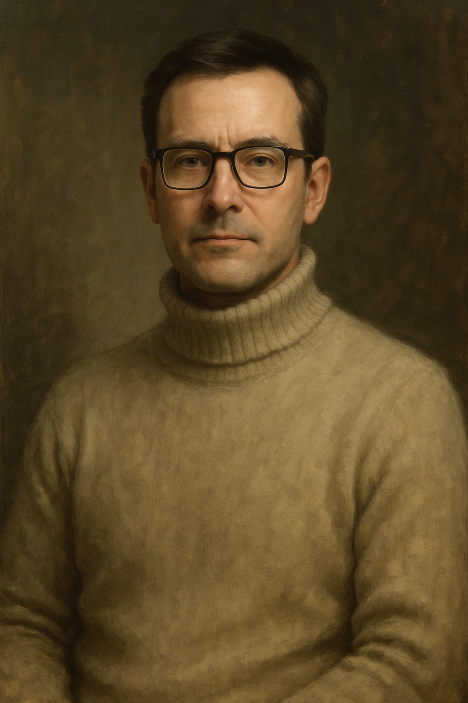Tout comme sa femme, Nathan est décédé avant le début de l'histoire. informations limitées sur son profil, qui seront un peu plus dévoilées au cours du récit.
Aaron Sélina
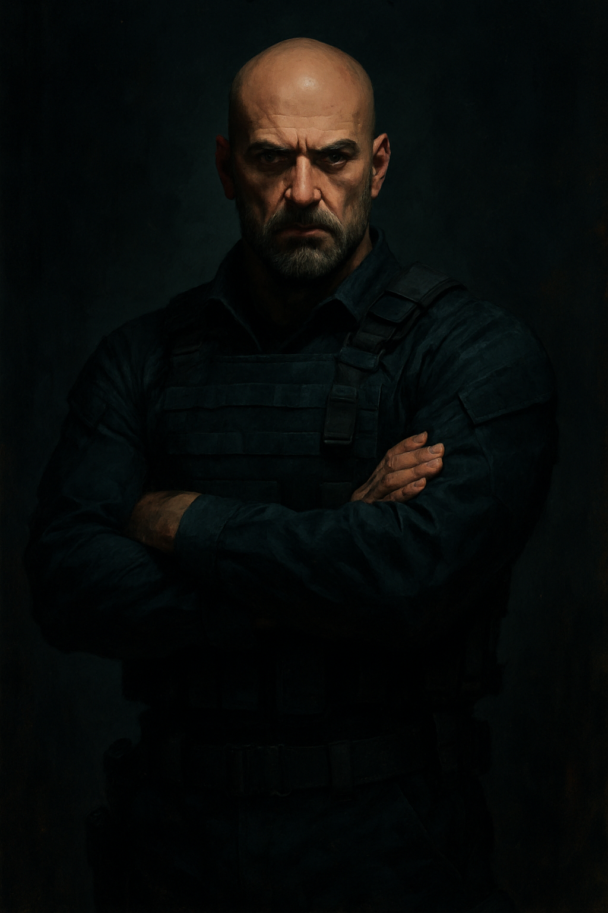Chef de l'unité en charge de l'affaire Fallen, Aaron est aussi le père de Kylia. Fraichement arrivé à Golza, la ville où Fallen se trouve, il mettra tout en oeuvre pour arrêter ce tueur inssaisissable et protéger ses proches. Calme mais impulsif, méthodique et déterminé, Aaron est un personnage haut en couleur.
Lucie Sélina
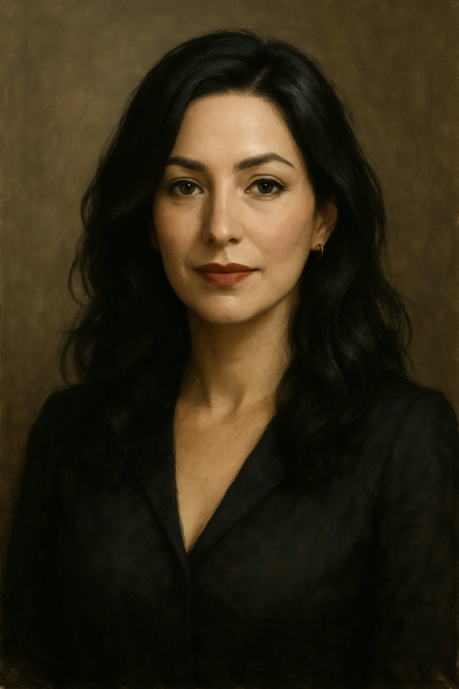A l'image de sa fille, Lucie est une femme douce et aimante. Infirmière libérale de profession, cette mère de famille est très soucieuse de son prochain et soutient son époux dans tous ses moments difficiles.
Kylia Sélina
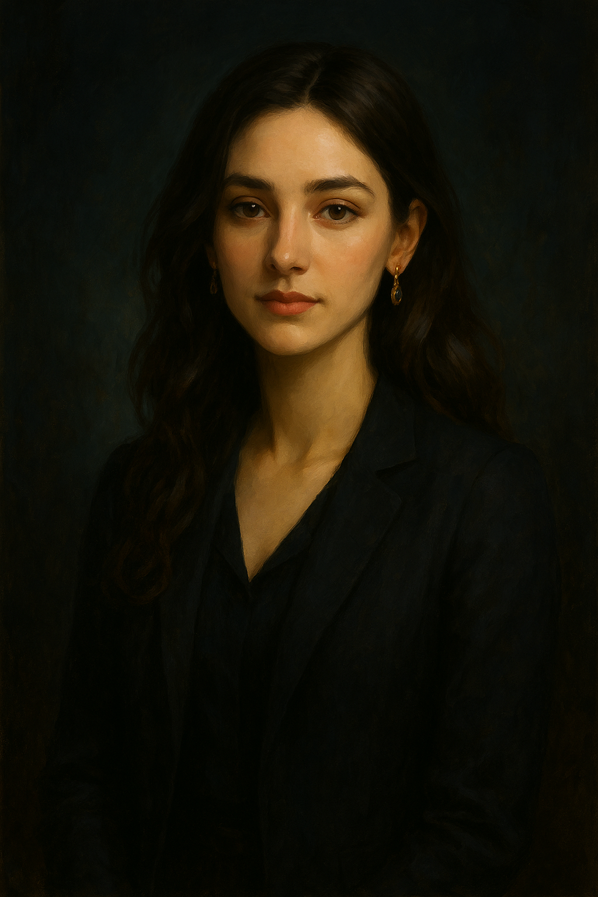Fille d'Aaron et Lucie, Kylia est une jeune femme douce et profondément bienveillante. Son arivée à Golza suite à la mutation de son père la poussera à se forger de nouvelles relations, qui verront naitre son amitié fusionelle avec Abby, mais aussi sa relation complexe avec Alix.
Carl ?
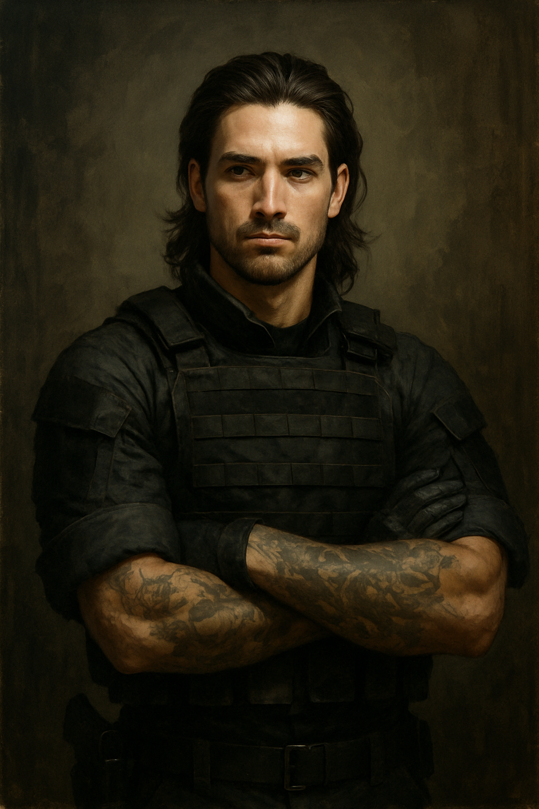Second en chef de l'unité spéciale d'Aaron, Carl est un jeune trentenaire intrépide. Particulièrement loyal à son mentor qui lui a tout appris, il prends très à coeur la traque de Fallen afin de redorer son blazon auprès de du haut commandement suite aux multiples échecs à arrété celui qui se joue de leurs services depuis des mois.
Earl ?
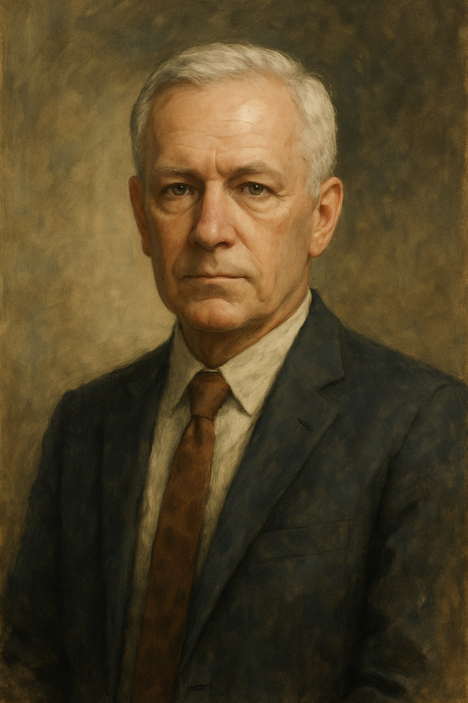Fonctionnaire de police, Earl est le superieur direct de l'unité dirrigé par Aaron. C'est un homme autoritaire et directif qui apprcie le travail net et sans bavure. Au vu des récents exploits de Fallen, Earl a ordonné à l'unité d'Aaron de se rendre à Golza pour traquer et arrêter le meurtrier.
Abby
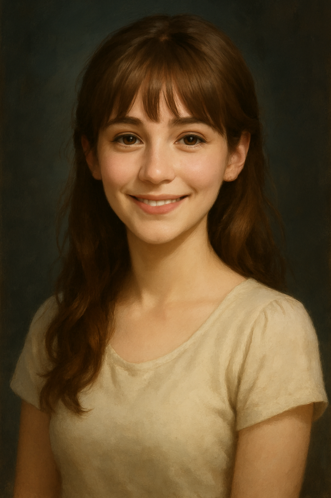Abby est une jeune femme joviale, très appreciée pour sa bienveillance et sa neutralité. Malgré sa maladresse flagrante, Abby devient rapidement une personne très importante dans la vie de Kylia. Amoureuse de l'art en général, elle voue toutefois une admiration profonde et partiellement secrète pour Fallen qu'elle estime être un mal nécessaire pour nettoyer les rues de leurs dangerosité, allant jusqu'à peindre des croquis du mysterieux criminel.
Fox
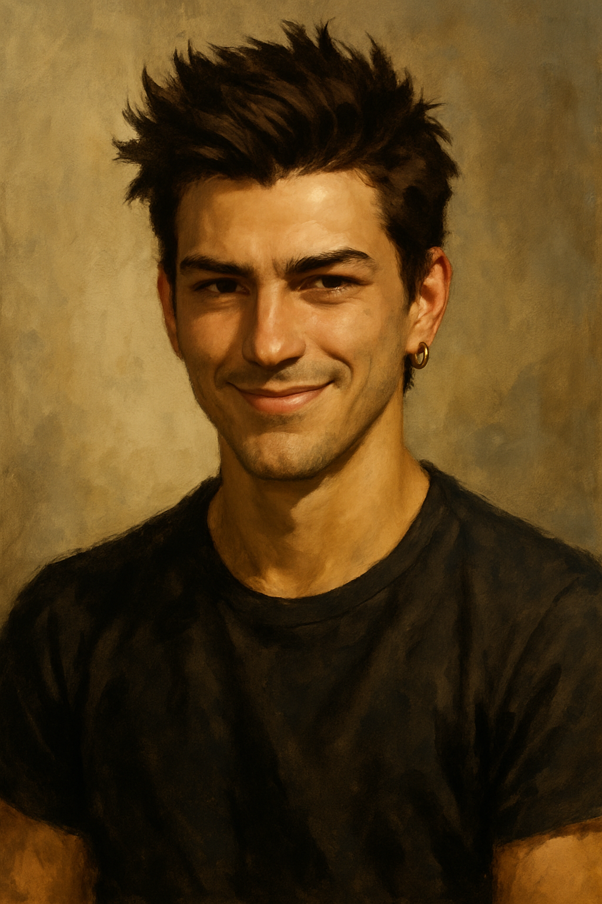Véritable tête brulée, Fox est un jeune homme plein de vitalité qui aime être au centre de l'attention. Plutôt secret sur sa vie personnelle, Fox sera très souvent la pierre angulaire d'un groupe d'amis..pas si amis que ça.
Shayna
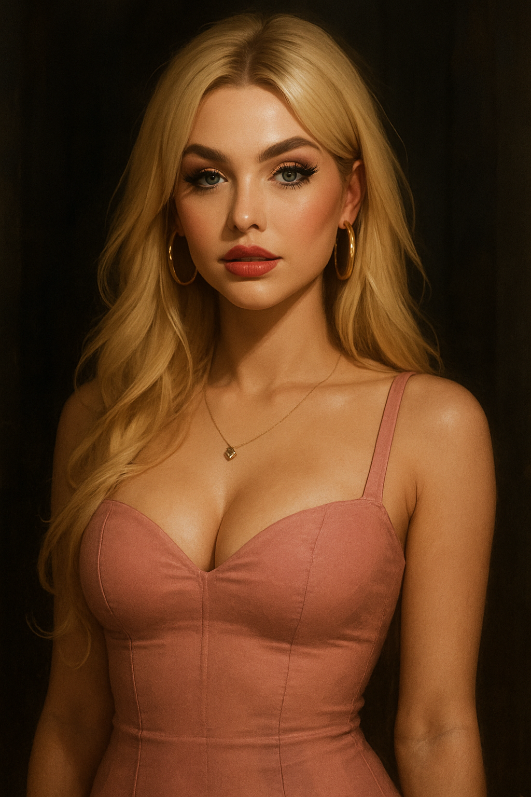Toutes les histoires ont une chose en communs! Une petite blonde imbus de sa personne qui souhaite à tout prix briller plus que les autres. Alors la voici, avec un nom qui lui va comme un gant! Shayna a toutefois pas si mauvais fond, et son côté superficiel pourrait bien cacher de plus sombres secrets... C'est elle, Fallen. Je vous assure. Et pourquoi pas, après tout?
Glenn
Dans le même registre, il me fallait une petite brute pour semer juste ce qu'il faut , de petits problèmes quotidiens. Glenn est jeune homme peu brillant mais qui sait toutefois se faire respecter. A grands coups de... Contre toute attente, il semble avoir décidé de prendre Alix en grippe et de lui mener la vie dure, mais cela sera il bénéfique pour lui?
John
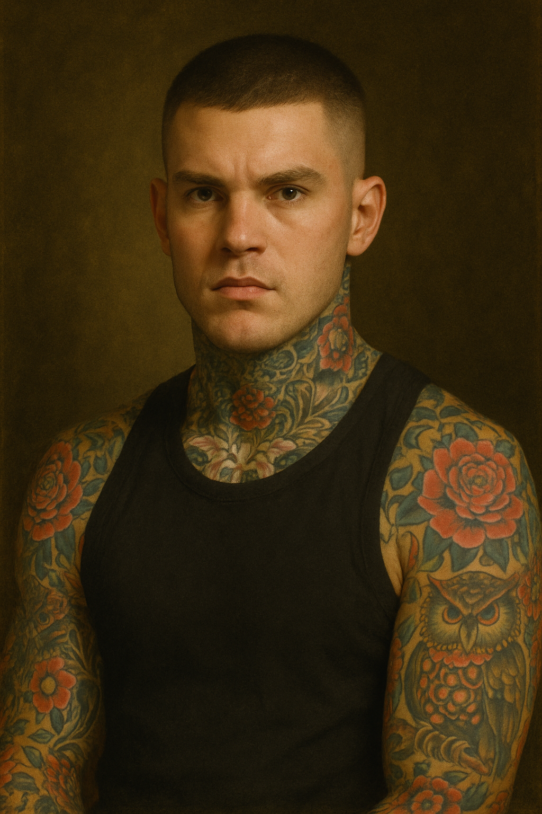John est un garçon discret plutôt solitaire mais pas sauvage pour autant. Il passe le plus clair de son temps à courrir et travailler pour ses études de droits dans le but de devenir avocat. Un choix de carrière influencé par une erreur judiciaire ayant envoyé son père en prison malgré l'innocence qu'il clame depuis le début.
Alan
L'achétype même du mec super sympa, toujours prêt à rendre service à tout le monde et se faire passer en dernier.
Tyler
Tyler est un jeune homme sympathique au premier plan, mais reste constament méfiant des autres. Il est le frère jumeau de Grace. Tout deux ont été élevé par un père alcolique et violent décédé des suites de son addiction. Il passe beaucoup de temps dans des groupes de soutient afin de cicatriser de ses blessures enfouies et demeure un vrai soutient pour sa jumelle.
Grace
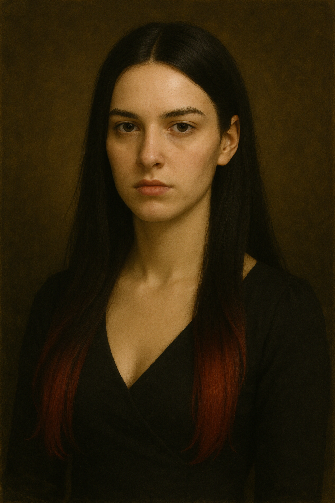Grace est la soeur jumelle de Tyler. Tout comme lui, elle a subit les frais d'un père violent et n'accorde pas facilement sa confiance. Peinant à se reconstruire, Grace peut toutefois compter sur le soutient moral de son frère.
Lexie ?
Lexie est une jeune femme pleine de vie, et également la seule que Alix tolère dans son entourage. Elle semble avoir fait de sa vocation, le sauvetage émotionnel de ce dernier. Toutefois, Lexie semble être assez transparente au yeux du reste du groupe qui pour une raison ou une autre, semble ne pas trop vouloir la calculer ni lui adresser la parole. A t'elle fait quelque chose d'imparadonnable?
Nina ?
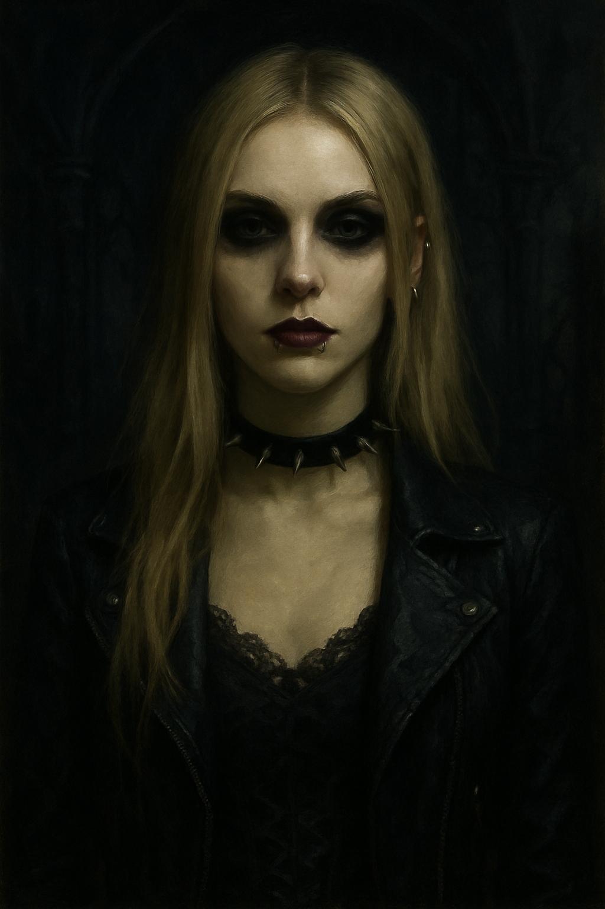Nina est une jeune femme particulièrement froide, au style très sombre et aux fréquentations douteuses. Avec un passé de jeune délinquante, Nina vit désormais seule depuis qu'elle a été émancipéeet fréquente tous les lieux les plus insallubre de la ville à la recherche de divers drogues.
Véronica ?
Véronica est une psychologue dans la ville de Golza. Elle suit également plusieurs patient dont Alix pour qui la thérapie semble difficile à armocer. C'est femme pragmatique et résiliente qui se par sa sensibilité à très à coeur de venir en aide. véronica n'est pas mariée et n'a pas d'enfants, mais elle ne semble pas être malheureuse pour autant.
Marvin ?
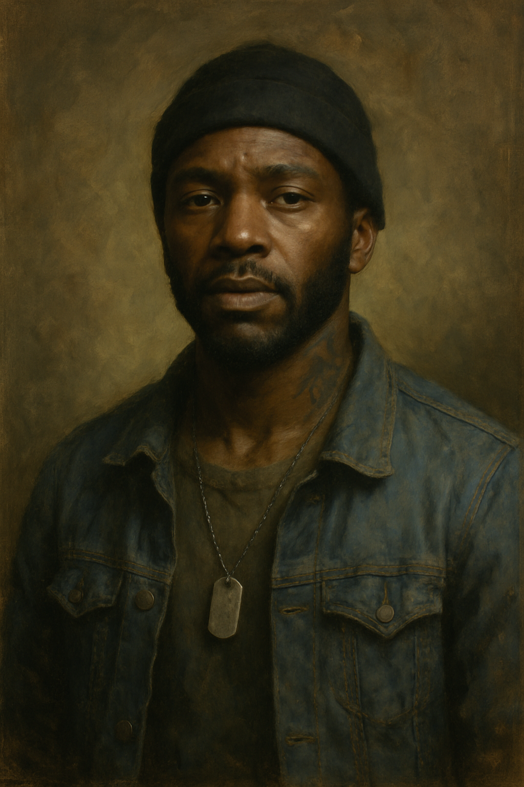Marvin est un proche d'Alix. Après son départ de l'orphelinat Marvin a receuillit Alix et l'a aidé à se reconstruire. Ancien militaire, Marvin est un homme droit, avec un coté strict et très à cheval sur les règles élémentaires.
Roberta ?
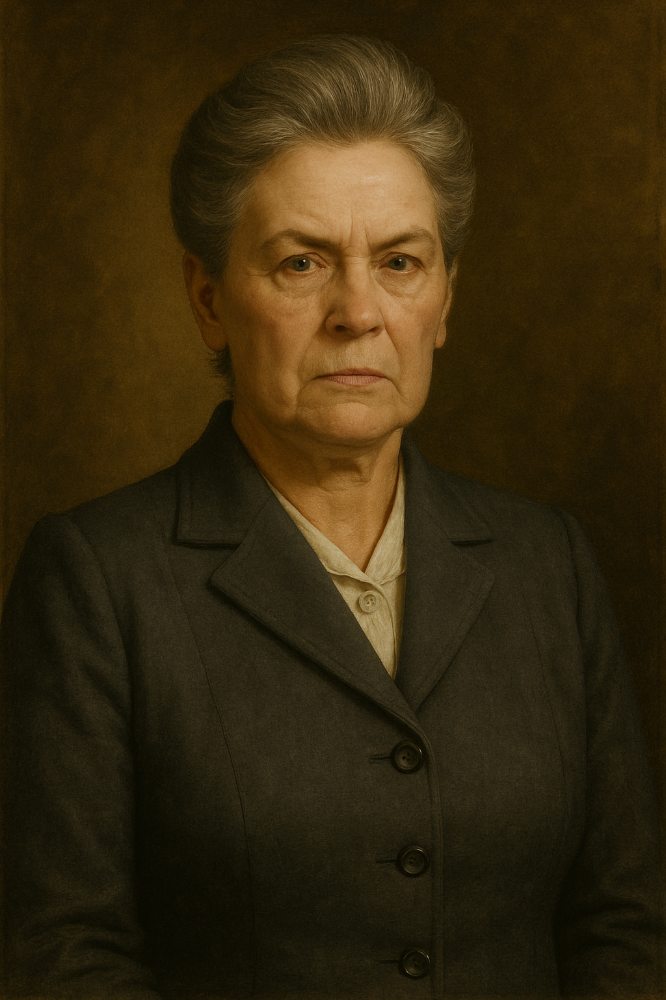Roberta est la directrice de l'orphelinat de Golza. Une dame agée très conventionnelle .
Lucas

Une intelligence glaciale, toujours en quête de vérité.
Angèle
Une intelligence glaciale, toujours en quête de vérité.
Fox
Une intelligence glaciale, toujours en quête de vérité.
Shayna
Une intelligence glaciale, toujours en quête de vérité.
Fox
Une intelligence glaciale, toujours en quête de vérité.
Shayna
Une intelligence glaciale, toujours en quête de vérité.
Fox
Une intelligence glaciale, toujours en quête de vérité.
Shayna
Une intelligence glaciale, toujours en quête de vérité.
Fox
Une intelligence glaciale, toujours en quête de vérité.
Shayna
Une intelligence glaciale, toujours en quête de vérité.
Fox
Une intelligence glaciale, toujours en quête de vérité.
Shayna
Une intelligence glaciale, toujours en quête de vérité.
Fox
Une intelligence glaciale, toujours en quête de vérité.
Shayna
Une intelligence glaciale, toujours en quête de vérité.
Fox
Une intelligence glaciale, toujours en quête de vérité.
Shayna
Une intelligence glaciale, toujours en quête de vérité.
Fox
Une intelligence glaciale, toujours en quête de vérité.
Shayna
Une intelligence glaciale, toujours en quête de vérité.
Fox
Une intelligence glaciale, toujours en quête de vérité.
Shayna
Une intelligence glaciale, toujours en quête de vérité.